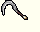
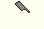
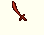
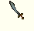
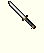
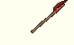
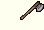
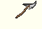

| | Weapon | Required STR | Damage | Speed |
 | Bokuto | 20 | 9 to 11 | 20 |
| Peasant's Bokuto | 20 | 9 to 11 | 20 |
| The Dragon's Tail | 20 | 9 to 11 | 20 |
|  | Bone Harvester | 25 | 13 to 15 | 30 |
| Breath of the Dead | 25 | 13 to 15 | 30 |
 | broadsword | 30 | 14 to 15 | 32 |
| butcher knife | 5 | 9 to 11 | 22 |
|  | cleaver | 10 | 11 to 13 | 25 |
 | Cold Blood | 10 | 11 to 13 | 25 |
 | cutlass | 25 | 11 to 13 | 25 |
|  | Captain Quacklebush's Cutlass | 25 | 11 to 13 | 25 |
 | Elven Machete | 20 | 13 to 15 | 22 |
| Adventurer's Machete | 20 | 13 to 15 | 22 |
| Diseased Machete | 20 | 13 to 15 | 22 |
| Machete of Defense | 20 | 13 to 15 | 22 |
| Orcish Machete | 20 | 13 to 15 | 22 |
| Righteous Anger | 20 | 13 to 15 | 22 |
 | katana | 25 | 11 to 13 | 25 |
| Blade of Insanity | 25 | 11 to 13 | 25 |
 | longsword | 35 | 15 to 16 | 35 |
 | long sword | 35 | 15 to 16 | 35 |
 | Blade of the Righteous | 35 | 15 to 16 | 35 |
 | Dragon's End | 35 | 15 to 16 | 35 |
| Jockles' Quicksword | 35 | 15 to 16 | 35 |
| The Holy Sword | 0 | 15 to 16 | 35 |
| Radiant Scimitar | 20 | 12 to 14 | 25 |
| Darkglow Scimitar | 20 | 12 to 14 | 25 |
| Icy Scimitar | 20 | 12 to 14 | 25 |
| Overseer Sundered Blade | 20 | 12 to 14 | 25 |
 | Soul Seeker | 20 | 12 to 14 | 25 |
| True Radiant Scimitar | 20 | 12 to 14 | 25 |
| Twinkling Scimitar | 20 | 12 to 14 | 25 |
|  | scimitar | 25 | 13 to 15 | 30 |
| skinning knife | 5 | 9 to 11 | 22 |
 | viking sword | 40 | 15 to 17 | 32 |
| Evocarius | 40 | 15 to 17 | 32 |
| Sword of Justice | 40 | 15 to 17 | 32 |
|  | Wakizashi | 20 | 11 to 13 | 25 |
 | axe | 35 | 14 to 16 | 30 |
 | bardiche | 45 | 17 to 18 | 32 |
|  | Legacy of the Dread Lord | 45 | 17 to 18 | 32 |
|  | battle axe | 35 | 15 to 17 | 35 |
 | Bladed Staff | 40 | 14 to 16 | 30 |
 | Crescent Blade | 55 | 11 to 14 | 25 |
 | Daisho | 40 | 13 to 15 | 22 |
| Swords of Prosperity | 40 | 13 to 15 | 22 |
 | double axe | 45 | 15 to 17 | 32 |
| Axe of the Heavens | 45 | 15 to 17 | 32 |
|  | executioner's axe | 40 | 15 to 17 | 32 |
 | Geoffrey's Axe - Museum of Vesper Replica | 40 | 15 to 17 | 32 |
| Zyronic Claw | 40 | 15 to 17 | 32 |
| halberd | 95 | 18 to 19 | 42 |
 | Blaze of Death | 95 | 18 to 19 | 42 |
 | hatchet | 20 | 13 to 15 | 22 |
| Melisande's Corroded Hatchet | 20 | 13 to 15 | 22 |
 | large battle axe | 80 | 16 to 17 | 32 |
 | No-Dachi | 40 | 16 to 18 | 35 |
| Sword of the Stampede | 40 | 16 to 18 | 35 |
| The Destroyer | 15 | 9 to 11 | 20 |
 | Ornate Axe | 45 | 18 to 20 | 35 |
| Guardian Axe | 45 | 18 to 20 | 35 |
| Heavy Ornate Axe | 45 | 18 to 20 | 35 |
| Singing Axe | 45 | 18 to 20 | 35 |
| Talon Bite | 45 | 18 to 20 | 35 |
| Thundering Axe | 45 | 18 to 20 | 35 |
 | Paladin Sword | 85 | 20 to 24 | 50 |
| The Redeemer | 85 | 20 to 24 | 50 |
 | Rune Blade | 30 | 15 to 17 | 30 |
 | Blade Dance | 30 | 15 to 17 | 30 |
| Corruped Rune Blade | 30 | 15 to 17 | 30 |
| Luminous Rune Blade | 30 | 15 to 17 | 30 |
| Mage's Rune Blade | 30 | 15 to 17 | 30 |
| Rune Blade of Knowledge | 30 | 15 to 17 | 30 |
| Runesabre | 30 | 15 to 17 | 30 |
 | two handed axe | 40 | 16 to 17 | 35 |
|